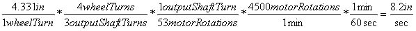
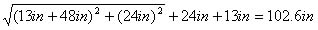
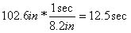

|
||
|
|
||
|
OVERVIEW
| HARDWARE
| SOFTWARE
| GALLERY
| THE TEAM
|
||
|
Overview
Arm Positioning Drive Train |
Drive Train 
A drive train was necessary for space and speed. The project required our robot to fit in the 12"x12" starting box; however, the supplied motors were very long with a length of 4.298 inches eaches. When the motors were lined diagonally in line with small wheels, the perimeter of the robot just fit within the starting square. Unfortunately, small wheels would not give us much speed for our already low-speed, high-torque motors. By using a drive train, we could increase the speed of our robot and arrange the location of the motors more flexibly. We chose to use timing belts and pulleys to reduce gear lash and to give us more flexibility when we mounted our motors. We designed our motors to mount to a sliding carriage so that we could tighten the belt while keep the wheel shaft fixed. The speed gain from the drive train was crucial as our bot would be moving constantly throughout the competition to different targets. The best pulleys we could find to fit our shafts gave us a 4 to 3 ratio speed increase. We also used 110mm large roller blade wheels to allow our bot to travel as fast as possible. With these parts, we had the following max speed:  With our path planning, the maximum distance we would need to travel to reach a target was the following:  So the time it would take our robot to travel in the worst-case scenario was the following:  The worst case travel time gave the bot's arm only 2.5 seconds to extend, hit the hat, and retract to meet the 15 second target assignment time. We could have potentially increased the motor speed, but during the finals days of testing, we noticed our line tracking lost accuracy when we increased motor speed. We preferred reliability of positioning over speed and decided to keep the motor speed limited at 4500 RPM. |
|